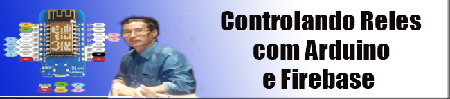
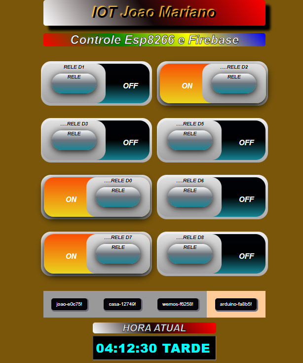
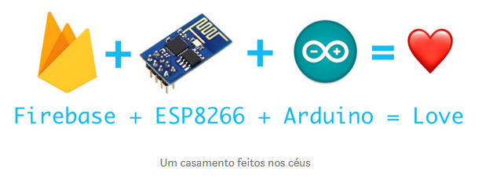
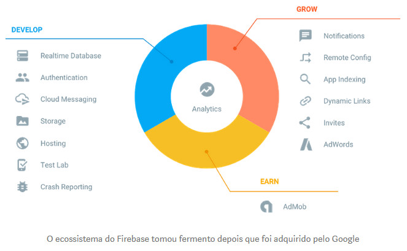
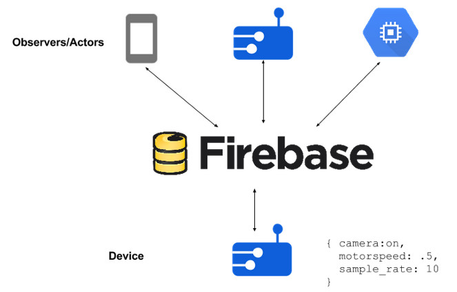
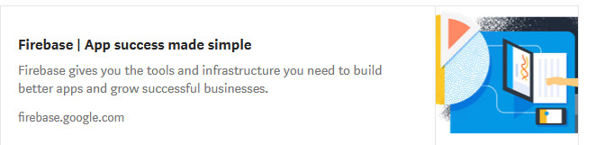
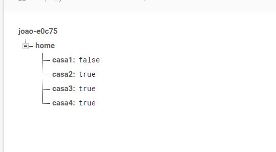
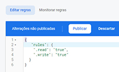
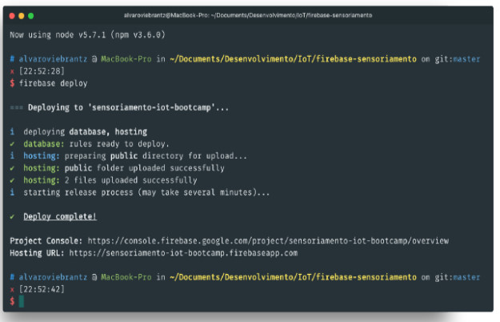

|  |
| IOT Joao Mariano |
|---|
| Controlando dispositivos na nuvem |
| Uma forma fácil e rápida de jogar seus dados para a nuvem, sem se queimar configurando servidores. |
| Quando desenvolvemos dispositivos conectados, um dos pilares que devemos considerar é que normalmente eles devem poder receber comandos e consultar seu estado atual em tempo real. O dispositivo consegue manter seu estado atual localmente, por meio de variáveis ou alguma forma de armazenamento interno, mas como fazer isso para consulta por dispositivos externos ? |
| Na perspectiva de software, esse estado pode ser uma leitura direta da voltagem em um pino digital, podendo ser HIGH ou LOW, alguma leitura analógica de um sensor ou um leitura de um sensor ou componente utilizando um protocolo I²C, Serial, etc. Normalmente nós mantemos isso no lado da aplicação embarcada ao invés de sempre ficar consultando as entradas e saídas do dispositivos, mudando esses valores quando alguma alteração ocorre ou por algum período definido de tempo. |
| Mas e quando precisamos saber esse estado de fora do dispositivo, como na Web ou em um aplicativo ? Não podemos confiar em consultar diretamente o dispositivo, pois ele pode estar em estado de sleep para economizar energia ou não estar acessível atualmente na rede. Uma solução é espelhar o último estado do dispositivo na nuvem, para que possamos consultar mesmo que o dispositivo esteja inacessível. |
| Existem várias maneiras de se fazer isso, diversos protocolos e padrões arquiteturais para cada situação, mas hoje eu vou me ater a mostrar para vocês como fazer isso de forma bem facilitada utilizando o Firebase integrado com um ESP8266, programando tudo com o ecossistema do Arduino e um pouquinho de HTML e JS para exibir os dados. Mas sem se queimar configurando servidores e tudo mais. |
| O que nós vamos construir |
| Vamos conectar diretamente o nosso dispositivo na nuvem do Google e no Firebase, podendo controlar um atuador direto no dispositivo (neste caso vários LEDs). Os LEDs podem serem trocados facilmente por relés e acionar uma lampada por exemplo ou outros dispositivos. |
| Depois será feito um site simples, utilizando tecnologias web, HTML5, CSS3 e Javacript, sendo hospedado diretamente no Firebase Hosting, para visualizar e controlar nosso dispositivo direto pela Web. A carinha da nossa aplicação vai ser essa da imagem. Podendo ser acessado Aqui. |
|  |
|  |
| Plataforma Firebase |
| O Firebase hoje, após a aquisição do Google, virou uma plataforma muito completa para se desenvolver aplicações. Podendo ser integrado em vários pontos partes da sua aplicação, ele conta com diversos produtos, sendo que eu considero os principais: |
| Autenticação com redes sociais de forma MUITO facilitada. |
| Armazenamento de arquivos. |
| Analytics para seu aplicativo nativo em Android e iOS. |
| Hosting de aplicações Web — Vamos usar para hospedar nossa aplicação. |
| Notificações Push para aplicativos iOS e Android. |
| E claro o Firebase Realtime Database que vou falar mais a frente. |
|  |
| O ecossistema do Firebase tomou fermento depois que foi adquirido pelo Google |
| Hoje ele possui bibliotecas para que podem ser utilizadas para integrar com o Firebase, então não vai faltar formas de se conectar com esses serviços: |
| Aplicativos móveis iOS e Android, |
| Games com a Unity |
| Admin SDK para seu backend em NodeJS e Java |
| A clássica SDK para a Web em Javascript. |
| E ma equipe do Google criou a biblioteca para utilizar o Firebase com o Arduino também, com ela que vamos conseguir enviar os dados para lá. |
| O Firebase Realtime Database é uma tecnologia muito utilizada para manter estados em tempo real, fornecendo esse sincronismo de graça para todos os clientes conectados. Seu armazenamento funciona em forma de árvores ou documento JSON e utilizando uma biblioteca cliente dele (que existe para diversas linguagens) você pode enviar e subscrever para qualquer caminho da árvore para receber e enviar notificações das mudanças nos dados. |
| https://cloud.google.com/solutions/iot-overview |
| Arquitetura IoT utilizando o Firebase — https://cloud.google.com/solutions/iot-overview |
| Aproveite e já crie uma conta e um projeto no console do Firebase. No console do projeto conseguimos editar e visualizar os dados em nosso banco em tempo real. Vamos precisar de algumas informações do console para poder configurar nosso dispositivo IoT e a aplicação Web. |
|  |
| 1 - Vá para a seção Database. |
| 2 - Anote a URL que aparece com o formato https://nome-do-projeto.firebaseio.com/ |
| 3 - Agora clique na engrenagem no canto superior esquerdo, do lado de Overview e depois em Configurações do Projeto. |
| 4 - Vá para a aba Contas de Serviço > Segredos do Banco de Dados. |
| 5 - Clique em “Mostrar” e anote o segredo de banco, isso serve como chave para manipular os dados do Firebase. |
| Ao final desses passos você deve ter a URL do seu banco e um Segredo para fazer a manipulação dos dados. |
| Ferramentas |
| Precisamos configurar a IDE do Arduino para programar o ESP8266 e para isso eu recomendo fortemente o tutorial a seguir do blog do FilipeFlop. |
| Como programar o NodeMCU com IDE Arduino | Blog FILIPEFLOP |
| O NodeMCU pode ser programado usando Lua, como vimos no post Como Programar o Módulo ESP8266 NodeMCU. Apesar da… |
| blog.filipeflop.com |
| Depois disso precisamos instalar a biblioteca firebase-arduino, que pode ser encontrada no Github do Firebase. Siga os passos para fazer a instalação. |
| GitHub - firebase/firebase-arduino: Arduino samples for Firebase. |
| firebase-arduino - Arduino samples for Firebase. |
| github.com |
| 1 - Faça o download do projeto em seu computador. Aqui |
| 2 - Inicie a IDE do Arduino |
| 3 - Adicione a biblioteca indo no menu Sketch > Include Library > Add .ZIP Library… |
| 4 - Escolha o arquivo firebase-arduino-master.zip que você baixou anteriormente. |
| 1 - Usando o Library Manager da IDE do Arduino. Você pode ir no menu Sketch > Incluir Biblioteca > Gerenciar Bibliotecas. Depois disso é só buscar por “Firebase-arduino-master.zip” |
| A biblioteca do Firebase tem que ser instalada manualmente por que ela não está publicada no repositório do Arduino. |
| Código do ESP8266 |
| O código do arduino está neste projeto no Github, na pasta arduino. Você vai precisar trocar as seguintes variáveis para usar com o seu projeto no Firebase: |
| FIREBASE_HOST: preencha com a URL do seu banco no Firebase, obtida nos passos anteriores. |
| FIREBASE_AUTH: aqui deve ser colocado o Segredo do seu banco no Firebase, também obtido nos passos anteriores |
| WIFI_SSID e WIFI_PASSWORD: você deve informar os dados para conectar na WiFi da sua casa. |
| CÓDIGO DO TUTORIAL HOSPEDADO NO GitHub |
| Basicamente o que a aplicação faz é mudar o estado dos nós de true para false e vise versa. A estrutura no Firebase ficou assim: |
|  |
| Estrutura da nossa aplicação |
| Lembrando que no lugar dos LEDs podemos ter um módulos de relês e controlar uma lampadas e outros dispositivos, então não se limite aos LEDs. |
| Pela interface Web do Firebase você consegue alterar e inserir novos dados facilmente e depois de rodar a aplicação no ESP8266 você já vai conseguir ver os dados aparecendo automagicamente na interface. |
| Criando nossa aplicação Web |
| Agora falta a parte de controle na Web do nosso dispositivo. Vamos fazer um site simples, utilizando tecnologias web padrão, HTML5, CSS3 e Javacript, sendo hospedado diretamente no Firebase Hosting |
| Ferramentas e IDE |
| Para fazer deploy da aplicação no Firebase precisamos instalar o firebase-tools, que é uma ferramenta de linha de comando para gerenciar o banco de dados e hosting de aplicações dentro da plataforma Firebase. Essa ferramenta é baseado em NodeJS, então precisamos instalar isso primeiro. |
| Download | Node.js |
| Download the Node.js source code or a pre-built installer for your platform, and start developing today. |
| Com o Node e NPM instalado é só rodar o comando: |
| npm install -g firebase-tools |
| Ao final da instalação rode o comando a seguir e coloque suas credenciais do Firebase: |
| firebase login |
| Vocês podem utilizar diversas IDEs para desenvolver o código em HTML e Javascript, vou colocar a seguir algumas, mas fica a seu critério escolher. Eu gosto bastante de utilizar o Dreamweaver. |
| Atom.io |
| Webstorm Jetbrains |
| Visual Studio Code |
| Sublime Text |
| Programação |
| Cria uma pasta para o seu projeto e utilize o comando dentro da pasta: |
| firebase init |
| Com isso você vai vincular a pasta com o projeto criado no console do Firebase, então escolha corretamente o projeto que foi criado anteriormente. Ele vai criar a pasta public, onde vão os arquivos que podem ser hospedados no Firebase e serem acessados na web e também alguns arquivos de configuração do projeto. |
| Um arquivo importante que devemos alterar agora é o database.rules.json. Não vou me estender muito nele, mas basicamente com esse arquivo você consegue definir quem pode ler e escrever dentro do banco do Firebase, podendo definir regras e validações para os dados inseridos. Por enquanto vamos permitir leitura e escrita pra qualquer usuário, então mude para o conteúdo a seguir: |
|  |
| O firebase-tools possui também um servidor embutido, então estando na pasta você pode rodar firebase serve, para iniciar um servidor web na pasta public na porta 5000 por padrão. |
| A parte web também pode ser vista no Github, basicamente utilizei apenas Javascript, o framework CSS MaterializeCSS e a biblioteca Chart.JS para montar os gráficos. O código da aplicação pode ser visto em public/app.js e o front-end está todo contido em public/index.html |
| GitHub - Joao16mariano-Aciona Rele: [ ] Código do Tutorial de Arduino e Firebase… |
| Para adequar a aplicação ao seu projeto próprio no Firebase, você deve alterar o começo do arquivo app.js, com as configurações do console do projeto no Firebase. Para obter as configurações sigam os passos: |
| 1 - Clique em Overview no menu lateral. |
| 2 - Depois em “Adicionar o Firebase ao seu aplicativo da Web”. |
| 3 - Dentro da janela que abriu, copie o trecho dentro da segunda tag script e substitua pelo código correspondente no arquivo app.js. |
| Agora é só dar deploy da aplicação no hosting do Firebase. É só rodar o comando firebase deploy que você vai enviar os arquivos da pasta public, pra lá e o vai ser exibido o link para acessar sua aplicação online. |
|  |
| AEHOO — Mãe to na nuvem |
| Se deu tudo certo até aqui então pode comemorar que você uma aplicação IoT completa com controle via Web e mantendo o estado em tempo real na nuvem. |
| O Firebase é uma plataforma bem bacana para se utilizar hoje em dia, principalmente como foi comentado no começo do post, sobre manter estados em tempo real da sua aplicação, pois o Firebase te dá de graça todo esse sincronismo entre todos os clientes conectados. |
| Isso sem contar todo o ecossistema de produtos envolta dele, como foi mostrado a parte de Hosting, podendo hospedar sua aplicação de graça e ainda com HTTPS, o que é bastante importante hoje na web. |